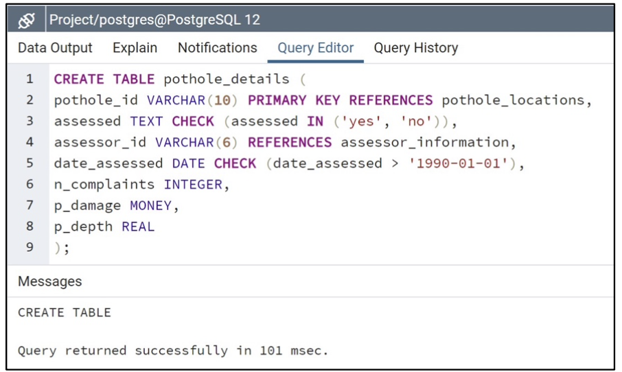
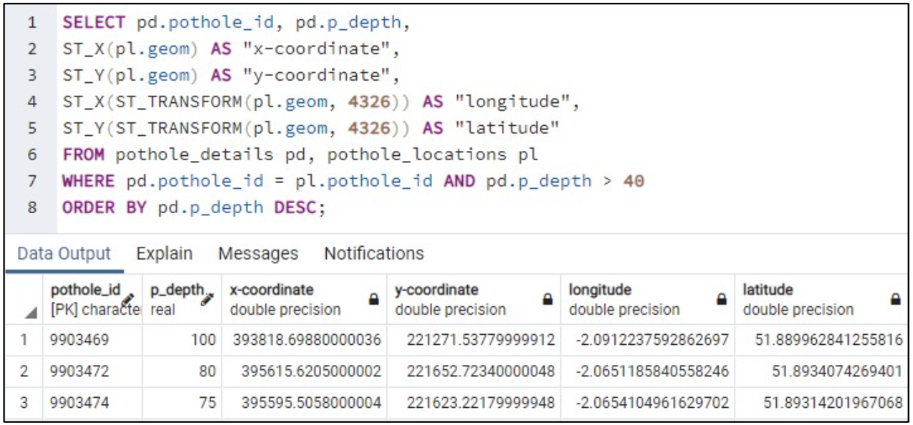

Non spatial tables were created using DDL.
Multiple non-spatial queries were carried out including identifying potholes that haven't been assessed and they date they were first identified.
Multiple spatial queries were carried out including idenitfying exact locations of the most dangerous potholes.